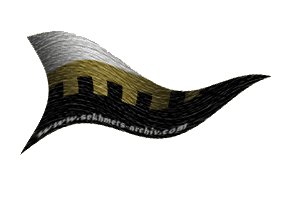
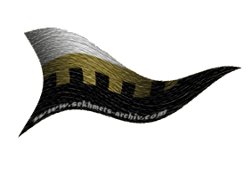
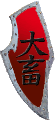

|

|
Das schwarze Brett
|
|
| Übersicht,
Anschläge und Stammtisch (RPG) |
|
Heiliges Artefakt gefunden ! (1  ) )
|
| Norfin Meivra (RIP) |
*Mit steinerner Mimik betrachtet der Seemann, in seine Uniform gehüllt und das lange weiße Haar zu einem Zopf zusammengebunden das treiben vor jenem Anschlag. Kurz reibt er sich die Stirn, setzt seine Kopfbedeckung ab und überreicht diese einem seiner Begleiter um dann selbst an das Anschlagbrett zu treten und die hier niedergeschriebenen Nachrichten mit hellblauen Augen zu mustern*
Welch ein unsinniger Streit, den die unsrigen und die der Dämonen hier führen. Es betrübt mich wahrlich, dass das Bildnis Bendurs, welches von den Verblendeten Sehern geschaffen wurde und soviele Opfer im Laufe der Suche forderte, nun hier und jetzt Grundlage eines solch niederen Streites ist.
Gerade von euch, Obsidia alte Freundin, hätte ich mehr Respekt vor Harlok, Eldoran und Chiaro erwartet, die entweder während, durch oder nach der langwierigen Suche ihr Leben ließen. Mehr Respekt zumindest als den Umstand eures Beutefanges hier der Provokation wegen anzupreisen. Seid ihr eine Dirne Olimanirs geworden?
Zuletzt jedoch zumindest eine Piratin wie ich sehe.
Und ihr, Schwester Mitrisha, solltet euch nicht erlauben im Namen des Konventes zu sprechen, denn diese Ehre habt ihr ebenso wenig wie Schwester Olga, Bruder Morgan und meine Wenigkeit. Zügelt bitte eure Empörung - besonders wo dieses Bildnis nicht von Bendur, sondern von Wesen erschaffen wurde, die Aufgrund ihrer Blindheit den Untergang fanden. Wesen deren Magie schwandt, als der letzte durch die Hand der Scherblinge fiel!
Aus diesem Grunde, oh allwissender Borbarad, würdet auch ihr nur mit wassergepantschtem Rum handeln.
Die Ideologie dieses Bildes mag für etwas Großes stehen, für große und kleine Scherblinge, die viel dafür gaben das Bildnis vor den Sehern zu bewahren.
Wenn ihr also schon vom Wege des Glaubens abweicht, alte Freundin Obsidia, so achtet wenigstens das andenken an diese Männer und hört auf sie durch diese Farce zu beschmutzen! Möge Bendur euch deseinst wieder auf den rechten Weg zurück führen, mein Kind.
*Der Seemann wendet sich nunmehr ab, greift nach seinem Hut und verschwindet in der Menge, während er einen Zettel unter all den Anschlägen zurück lässt*
Norfin Meivra,
Kardinal im Dienste des einzig wahren Glaubens an Bendur,
Ehemann der reizenden Yoko Tsuno
Zur 22. Stunde am 54.Saatmond im Jahre 429 |
23.05.07 19:53
|
|
Golgar
   |
Nunja und weiter sinkt das "Ansehen" Obisidia Schwarzfeders in den Augen derer, welcher im Glauben des Lichtes sind.
Wenn ihr nur einen Funken Anstand und Vernunft in euch tragt, Obisia Schwarzfeder, übergebt dieses "Artefakt" an den Bendurkonvent.
Dies wäre für euer Ansehen, bei den Konventen, nur förderlich.
Auch wenn, ich persönlich, in euch keinerlei Menschlichkeit mehr erkennen kann.
Auf einer Stufe mit Paktierern steht ihr. Der "Handel" wie ihr es nennt, belegt dies nur erneut, wie eure Taten zuvor auch....
Golgar,
Hohepriester im Dienste des einzig wahren Glaubens an Urvan,
Legionär Urvans
Zur 23. Stunde am 55.Saatmond im Jahre 429 |
24.05.07 1:32
|
|
Alessa Imret Eilistraee
  |
*schmunzelt*
Ohhhh, Obsidia, mögt ihr es nicht mir überlassen?
Ich denke ich könnte meinem Liebsten mit diesem Artefakt eine außerordentliche Freude bereiten... und die Meine wäre selbstverständlich nicht minder!
Als formschöner Fußabstreifer würde er sich sicher hervorragend in unserem Vorgarten machen... direkt neben dem kleinen Warnschild mit der Aufschrift "Gib acht wenn du Pottwal, oder Reiter des goldenen Hornes bist".
Überdenkt meine Worte und lasst von euch hören wenn ihr mir ein realistisches Angebot unterbreiten könnt...
Freudvoll,
Freifrau Alessa Imret Eilistraee,
Anführerin der glorreichen Nation "Qu`ellar Eilistraee",
Herrin verdammter Seelen,
s´argt d´lil qu´ellar Eilistraee,
Geliebte des martialischen Takehiko,
Verlobte des ehrenwerten Takehiko
Zur 13. Stunde am 75.Saatmond im Jahre 429 |
28.05.07 15:24
|
|
| Mitrisha Seabird (RIP) |
Welch ein nettes Angebot, Borbarad, der sich hinter Schall und Rauch verstecket. Du willst es wagen und aus deinem Schatten in mein Licht treten? Nun, dann pass nur auf, dass du dich nicht verbrennst und erkennst, dass dein kleiner Dämon, dem du meinst zu Dienen als Sklave, nicht so gross ist, wie du bisher immer dachtest. Nein, das ist falsch, denn denken fällt euch reichlich schwer, denn ihr unfähigen Diener plappert nur die Worte nach, um euren niederen Dämon gefällig zu sein, weit entfernt von einer eigenen Meinung.
Doch da du nun hier den ersten Schritt wagst, dein kärgliches Wissen über die Scherben, seinem rechtschaffenden Leben und Treiben Interesse entgegen zu bringen, um darauf rechtschaffend zu leben, will ich dir gern dazu verhelfen. Dir beibringen, was es bedeuten mag, dem Lichte zu dienen oder zumindest nicht in der Dunkelheit dahin vegetieren zu müssen, immer darauf wartend, einen kleinen Happen zugeworfen zu bekommen.
Auch für dich Bendorrak habe ich noch das eine oder andere Wort parat. Vielleicht willst auch die Lernen und erkennen, wie warm das Licht sein kann, um der eisigen Kälte der tiefen Dunkelheit dann zu entsagen.
Nun noch ein Wort an die Scherbe. Vielleicht mag es der Wille unseres Herren sein, dass dieses Stück vom Antlitz der Scherbe verschwindet, denn es wurde beschmutzt und entweiht. Finger der Piraten und kleine Bräute haben es berührt. Die Scherbe ist kein Ort für ein solches Artefakt und so kann es wohl sein, dass der Herr eher seine Vernichtung in kauf nimmt, als eine weitere Schändung zu billigen.
Mitrisha Seabird,
Hohepriesterin im Dienste des einzig wahren Glaubens an Bendur
Zur 2. Stunde am 83.Saatmond im Jahre 429 |
30.05.07 9:37
|
|
Bendorrak Orkhul
|
Ihr habt eine blühende Fantasie, kleines Froilein!
Doch ist es nicht die Aufgabe des Debattierclubs, sich Gedanken über die Beweggründe seiner Scheinheiligkeit zu machen und diese dann mittels einer Verlautbarung, die eh niemanden interessiert, bekanntzugeben?
Oder ist es soweit gekommen, daß selbst dafür keine Meinung im Konvent besteht? Sprecht Ihr gar womöglich für den Konvent? Oder seid am Ende sogar die beauftragte und lizensierte Mutmaßerin?
Bendorrak Orkhul |
30.05.07 10:04
|
|
| Mitrisha Seabird (RIP) |
Verlautbarungen sind ein aprobates Mittel zu verkünden, was der Herr von uns verlangt und welche Richtlinien er uns aufzeigt. Verlautbarungen sind dazu da, es der gesamten Scherbe bekannt zu geben. Dass dies dich nicht interessiert, war mir schon klar, doch nimm dich nicht so wichtig, denn du bist nur ein kleiner glimmender Funken im Feuer des Lebens auf der Scherbe.
Was mich und den Konvent angeht, so geht dich das herzlich wenig an. Ich arbeite im Auftrag meines Herren, verloren Seelen wieder auf den Kurs zu bringen, auf den Kurs in das wärmende Licht, weg von den Tiefen der Trübsinnigkeit und des gedankenlosens Folgen eines Dämonen.
Mitrisha Seabird,
Hohepriesterin im Dienste des einzig wahren Glaubens an Bendur
Zur 5. Stunde am 83.Saatmond im Jahre 429 |
30.05.07 10:16
|
|
| Lylah Chantal d`Avuna (RIP) |
Werte Mitrisha,
so unfähig scheint Borbarad gar nicht zu sein. Damit will ich ihn aber ganz bestimmt nicht in den Schutz nehmen.
Ich möchte Euch zitieren:
"...denn ihr unfähigen Diener plappert nur die Worte nach, um euren niederen Dämon gefällig zu sein, weit entfernt von einer eigenen Meinung."
Und hier gleich noch ein Zitat:
"Was mich und den Konvent angeht, so geht dich das herzlich wenig an. Ich arbeite im Auftrag meines Herren, verloren Seelen wieder auf den Kurs zu bringen, auf den Kurs in das wärmende Licht, weg von den Tiefen der Trübsinnigkeit und des gedankenlosens Folgen eines Dämonen."
Ihr handelt im Auftrag Eures Herren und er im Auftrag seines Herren. Der Unterschied ist nur, dass beide Herren grundsätzlich verschieden sind.
Und wie sieht es mit Euch aus Mitrisha? Könnt Ihr noch selbst denken? Eure Meinungsrichtung ist die des Konventes, sonst würde man Euch dort schon längst entfernt haben.
Ich weiss, man sollte nicht alles pauschalisieren.
Und noch ein letzter Gedanke, bevor ich versuche mich nicht mehr einzumischen:
Was wäre wenn es die dunklen Konvente und verlorenen Seelen nicht gäbe? Ihr wäret nicht mehr im Auftrag Eures Herren unterwegs. Ihr hättet keine Aufgabe mehr...
Beste Grüße
Lady Lylah Chantal d`Avuna,
Vorsteherin von Ibelin,
Ehefrau des ehrenwerten Gareth B`luthyrr d`Avuna
Zur 12. Stunde am 83.Saatmond im Jahre 429 |
30.05.07 11:56
|
|
Borbarad
|
Fischpriesterin Mitrisha Seabird,
ich danke euch, dass ihr euch um mein Befinden bei einem Treffen mit euch sorgt. Doch weder verbrenne ich in der Sonne wie ein Vampir noch zerlaufe ich im Regen wie eine Lehmfigur. Falls man euch dies über mich erzählt hat, es sind Ammenmärchen.
Auch ist euer doch recht barscher Ton mir gegenüber unnötig, ich bin nicht euer Feind. Ihr möchtet mir etwas beibringen und ich bin bestrebt mein Wissen zu mehren. Es gibt keinen Grund für unterschwellige Feindschaften.
Ist es mir gestattet Ort und Zeit für unsere Lehrstunden zu bestimmen oder möchtet ihr einen euch genehmen Ort und Zeitpunkt vorschlagen? Es steht euch selbstverständlich frei zu entscheiden wie es euch beliebt. Ich bin nicht daran interessiert eure Freiheit in irgend einer Form zu beschneiden.
Borbarad |
30.05.07 12:26
|
|
| Mitrisha Seabird (RIP) |
Ich glaube ihr täuscht euch gewaltig. Was ich hier kund tu, ist meine Meinung. Sie ist sicher geprägt durch meinen Glauben. Doch die Lichtsieben senden uns Zeichen, die wir interpretieren und lassen uns Spielraum im Handeln und der Auslegung. So erlebe ich es. Bendur ist gütig und lässt uns die Freiheit, so wie er die Sklaverei verabscheut. Die Dämonen nehmen die Freiheit, wie sie die Sklaverei einfordern und die Opferung derer. Sie geben die Worte vor und ihre Lakeien sprechen sie nach. Ihre Horden bestehen aus Untoten. Arme Seelen die zu ihrem Verhängnis den Dämonen anheim gefallen sind und nun ihrer Macht unterstehen. Unsere Glaubenskämpfer sind Freiwillige mit starkem Glauben. Alles Andere kann man per Taube besprechen und hat hier im Zusammenhang mit dem Artefakt keinen Zusammenhang.
Borbarad, ich mache mir immer um alle und Jeden sorgen. Deren Leben und wie sie es gestalten, ob es zum Lichte führt und wenn nicht, wie ich dazu beitragen kann, dies zu ändern. Ich habe meine Bestimmungen und Bendur unterstützt mich dabei in seiner Güte. Bestimmt den Ort, ich werde sehen ob ich diesen erreichen kann und wie ihr zu euren Worten stehen mögt.
Mitrisha Seabird,
Hohepriesterin im Dienste des einzig wahren Glaubens an Bendur
Zur 12. Stunde am 89.Saatmond im Jahre 429 |
31.05.07 21:28
|
|
Bendorrak Orkhul
|
"...und so kann es wohl sein, dass der Herr eher seine Vernichtung in kauf nimmt, als eine weitere Schändung zu billigen."
Es kann sein? Ihr seid Euch also gar nicht sicher? Und dennoch setzt Ihr es Euch im Debattierclub zumZiel, dieses Artefakt zu zerstören, ohne wirklich zu wissen, was Euer Fischgott will? Noch dazu gegen den Willen des Clubs, oder doch zumindest ohne dessen Zustimmung oder Auftrag.
Ich muß sagen, Ihr bildet Euch ganz schön viel ein und es würde mich nicht wundern, wenn der Club Euch bald die Mitgliedschaft kündigt.
Euer so ehrgeizig verfolgtes Ziel, die Präsidentschaft, erlangt Ihr so garantiert nicht, kleines Froilein.
Bendorrak Orkhul |
31.05.07 21:43
|
|
| Mitrisha Seabird (RIP) |
Nun, es gibt immer ein Vielleicht, denn im Gegensatz zu den niederen Schärgen der niederträchtigen Dämonen haben wir einen freien Willen und dürfen unsere eigene Meinung und auch Gedanken zum Ausdruck bringen. Etwas, um was ihr uns immer wieder beneidet, auch wenn ihr immer wieder versucht, dies mit faulen Worten madig zu machen und in Ermangelung jeglicher Argumente nur traurig und missmutig darüber lacht. Dabei hofft, dass wir dies als Beleidigung auffassen und weinend zu euch überlaufen sollen. Nein danke. Dazu wird es nicht kommen. Das Licht ist stark und wird auch dir und allen Anderen die Erleuchtung finden. Auch wenn mir bewusst ist, dass immer irgendwo Schatten zu sein wird, denn je mehr erleuchtet werden, um so mehr Schatten wird es auf Scherben zu finden geben.
Schatten, welches nun mal durch Licht hervorgebracht wird, haben das Bildniss Bendurs an sich gerissen. Etwas wo du nur darauf gewartet hast. Nun, das Bildnis mag unter dem Schuttberg des Gebäudes vermeindlich verloren gehen, doch gerissen aus den Händen der Dämonen und für immer vorhanden in den Herzen des Lichtes wird es nie seine Zerstörung finden.
Mitrisha Seabird,
Hohepriesterin im Dienste des einzig wahren Glaubens an Bendur
Zur 20. Stunde am 18.Blumenmond im Jahre 429 |
05.06.07 9:52
|
|
Übersicht,
Anschläge und Stammtisch (RPG)
|
|
|
|